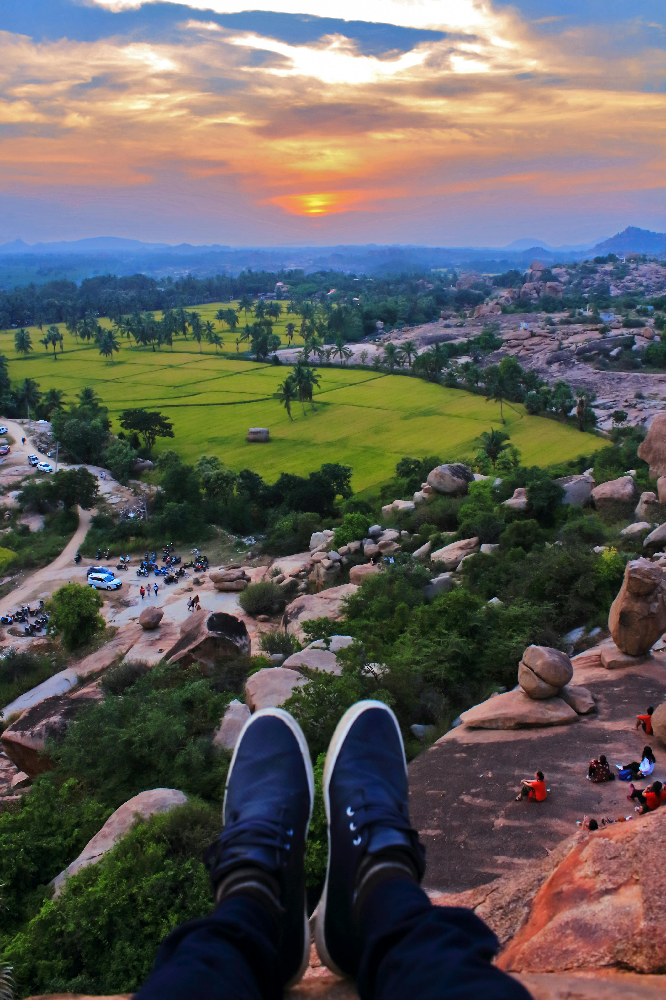
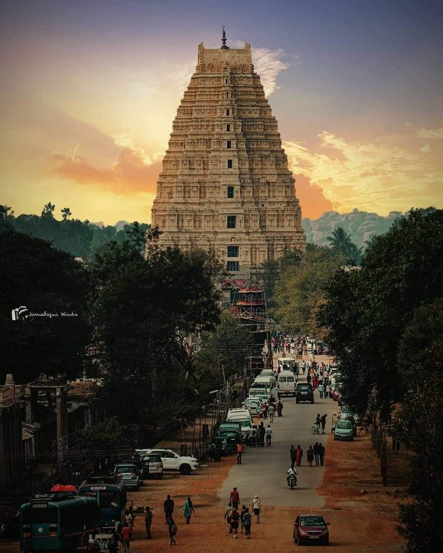
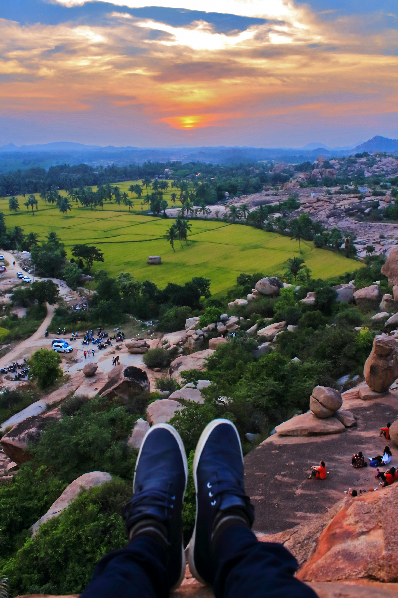
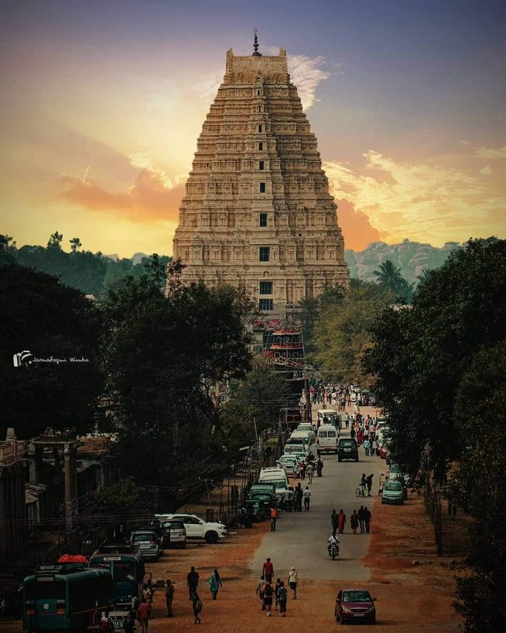

Virupaksha Temple
Experience the spiritual essence of this ancient temple, each with a story to tell!
- 1.What's Unique? The temple showcases Dravidian architectural style with intricate carvings, murals, and detailed sculptures.The gopuram (entrance tower) is 50 meters tall and elaborately decorated. A natural optical phenomenon occurs in the temple: a small hole in the temple projects an inverted image of the temple’s gopuram onto a wall in one of the inner sanctums. This is an example of a natural camera obscura.
- 2.Location Just a short walk from the Virupaksha Temple, Hemakuta Hill is home to numerous smaller temples and shrines. The hill offers panoramic views of the surrounding landscape and is a great spot for photography.
- 3.History The Virupaksha Temple is believed to have been originally established in the 7th century during the Chalukya dynasty, with references to it found in ancient texts and inscriptions. The earliest structure in the temple complex was built by the Chalukya King Vikramaditya II (c. 733-744 CE) to honor Lord Shiva in his form as Virupaksha.